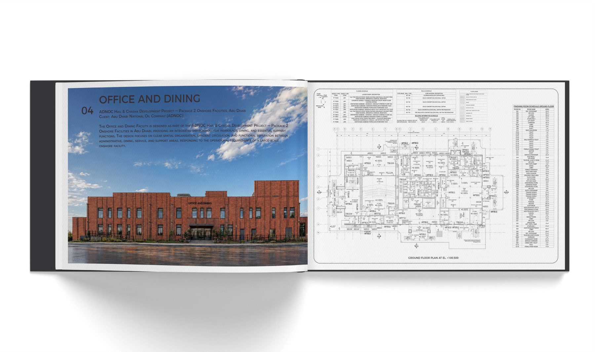
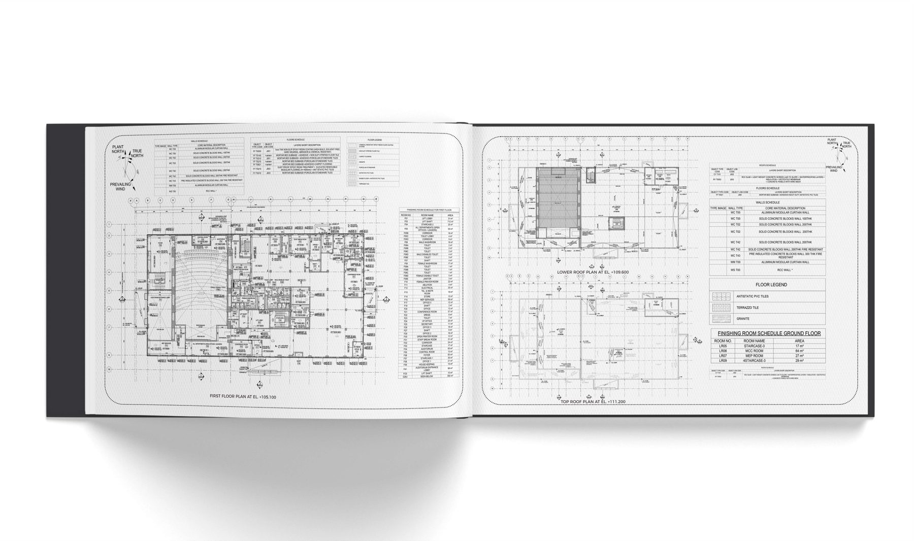
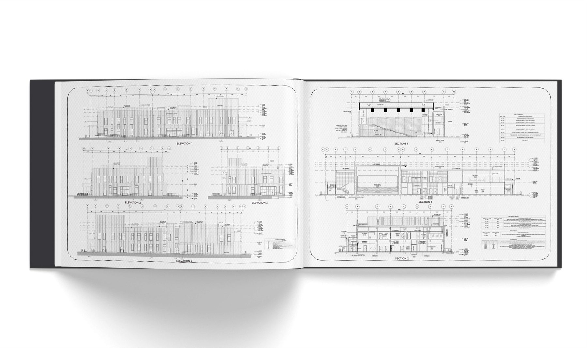
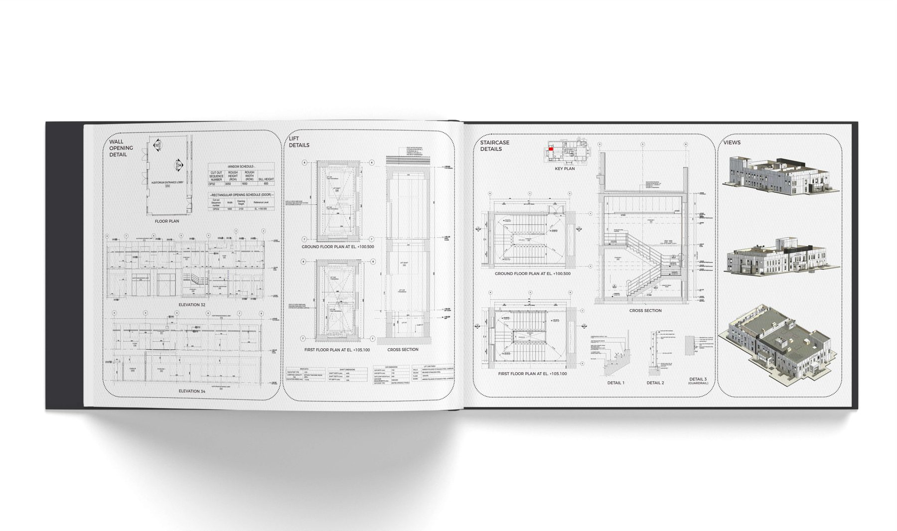
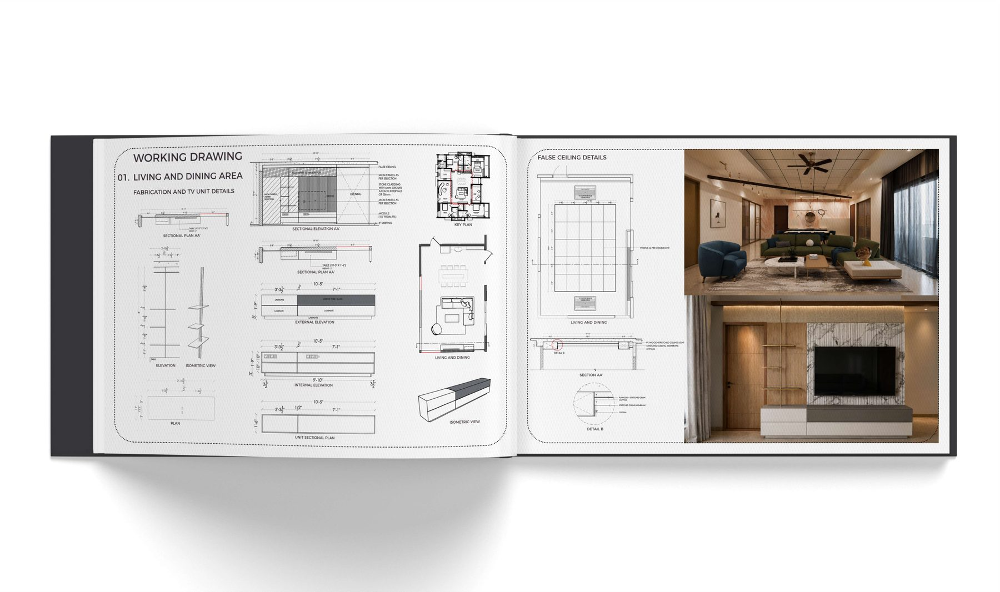
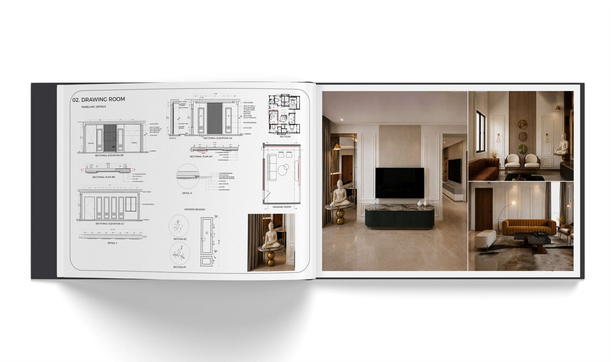

02 / SELECTED WORK
Selected projects and technical studies from the portfolio.
01RESIDENCE
Residential Architecture
A residential project in Atholi, Kozhikode developed from spatial planning and BIM-based design to architectural expression, combining Kerala’s climatic wisdom, pitched-roof architecture, contemporary planning and connection to nature.
02TEMPLE / FREELANCE DESIGN
Vadakkandhara Sree Thirupuraikkal Bhagavathy Kshethram
A traditional Kerala temple project in Vadakkandhara, Palakkad, rooted in regional architectural vocabulary — layered pitched roofs, clay-tiled roofing, timber elements, ornamental detailing and proportioned gateways.
03MIXED-USE DEVELOPMENT
Mixed-Use Building
A mixed-use development in Palakkad integrating retail, hospitality and residential functions. The design explores curvilinear massing, central voids, flowing circulation, open views, green terraces and vertical mixed-use zoning.
04ADNOC / BIM
Office & Dining
A BIM-based design of an office and dining facility for ADNOC, developed in Revit with planning, circulation, architectural detailing and coordination of design and technical elements within a unified digital model.




05MISCELLANEOUS / REVIT FAMILIES
Parametric Custom Families
A collection of custom Revit families developed with parametric controls for flexible BIM-based detailing, including steel doors, windows and furniture elements.
06WORKING DRAWING
Interior & Detail Drawings
Technical drawing studies covering living and dining areas, fabrication details, TV units, false ceiling details, sectional plans, elevations, isometric views and drawing-room panelling.

